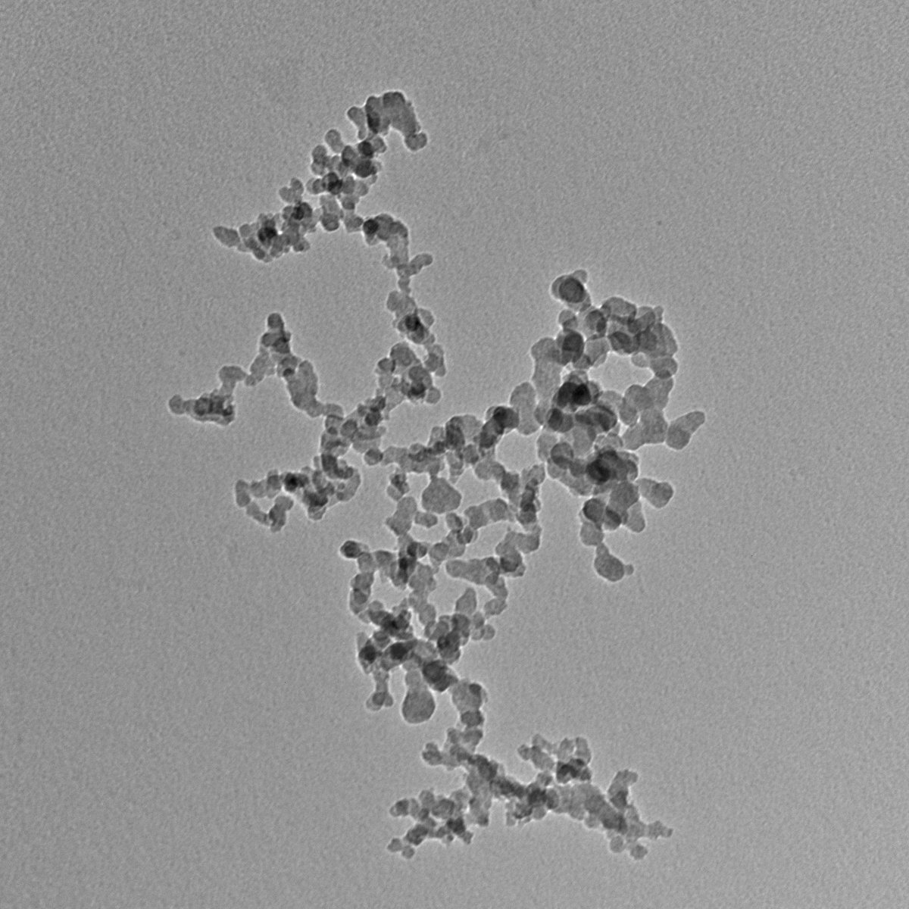
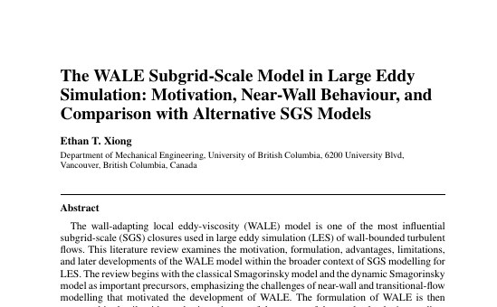
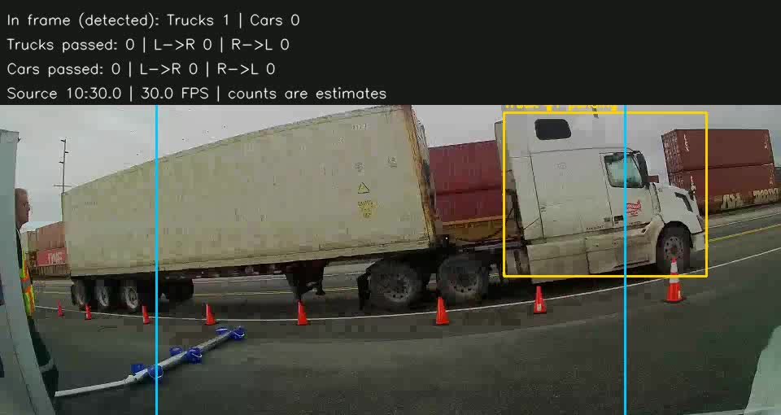

Things I've designed, built, and measured.

CarboSAMY
A deep-learning workflow that finds, segments, and measures soot and other carbonaceous particles in electron-microscope images, reducing analysis time by 99.6%.

Smart Brake Chamber
A motorized locking device that keeps thieves from releasing a trailer's parking brakes through the caging port, while staying quick to remove for authorized maintenance.

Particle Image Velocimetry over an Airfoil
PIV in a recirculating water channel to map the flow around a NACA 0012 from ~1° to ~38° angle of attack, and estimate lift from circulation.
Mixed Turbofan Cycle Analysis
A station-by-station cycle model of a mixed-flow turbofan, used to study how bypass ratio, pressure ratio, and turbine inlet temperature trade thrust against fuel burn.

LES Subgrid-Scale Model Review
A technical review comparing Smagorinsky, dynamic Smagorinsky, WALE, Vreman, and Sigma models, with a focus on WALE for wall-bounded flows.

STOODIS
A 180 cm fibreglass-and-aluminium rocket for the 2024 First Nations Launch. I designed the fin can and built the von Kármán nosecone that housed the payload.

Roadside Vehicle Tracker
A vehicle detector and tracker for roadside video, built on Ultralytics YOLO with my own fine-tuned model, that logs vehicle passes so they can be matched to measured exhaust plumes.

ENORD
An RC crawler designed from scratch to handle real cave terrain, with a 4-link suspension and an almost entirely 3D-printed chassis.